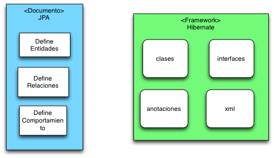

JPA (Java Persistence API) es solo un documento/estándar que define cómo debería funcionar la persistencia en Java EE. Es decir:
Define qué debe existir: anotaciones como @Entity, @Table, @Id, una interfaz EntityManager, etc.
Define cómo se deben comportar esas cosas.
Pero no incluye código ejecutable. No puedes "instalar JPA" y ponerte a trabajar con él.
Es parte de la especificación EJB 3 (JSR 220), que es el documento oficial donde se describen esas reglas. Piensa en JPA como el "plano" o el "contrato".
Hibernate es un framework concreto, con código de verdad, que implementa esa especificación. Es lo que realmente usas en tu aplicación para guardar/leer objetos de la base de datos.
Puede configurarse mediante ficheros XML o mediante anotaciones.
Cuando usas Hibernate, por debajo estás usando una implementación de JPA (Hibernate es la implementación de referencia más popular).
Analogía: JPA es como el "reglamento de construcción" y Hibernate es la "constructora" que realmente levanta el edificio siguiendo ese reglamento.
Hibernate adoptó las anotaciones del estándar JPA (@Entity, @Id, @Column...). Es decir, cuando escribes esas anotaciones en tus clases, estás usando el estándar JPA, no algo propio de Hibernate.
En la práctica, lo normal hoy es usar Hibernate como implementación de JPA con anotaciones, y los ficheros XML propios de Hibernate se ven más en proyectos antiguos o cuando necesitas funcionalidades que el estándar no cubre.

Fuente: www.genbeta.com